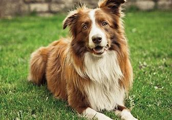

Home
News
Animals
content

Domestic dogs
Type:
Mammals
Diet:
Omnivore
Group Name:
Pack
Average Life Span In The Wild:
12 years
Size:
Five to 35 inches at the shoulder
Weight:
Three to 250 pounds
Popular Articles
French Dog Breeds You’ll Want to Take Home
Top 10 Japanese Dog Breeds